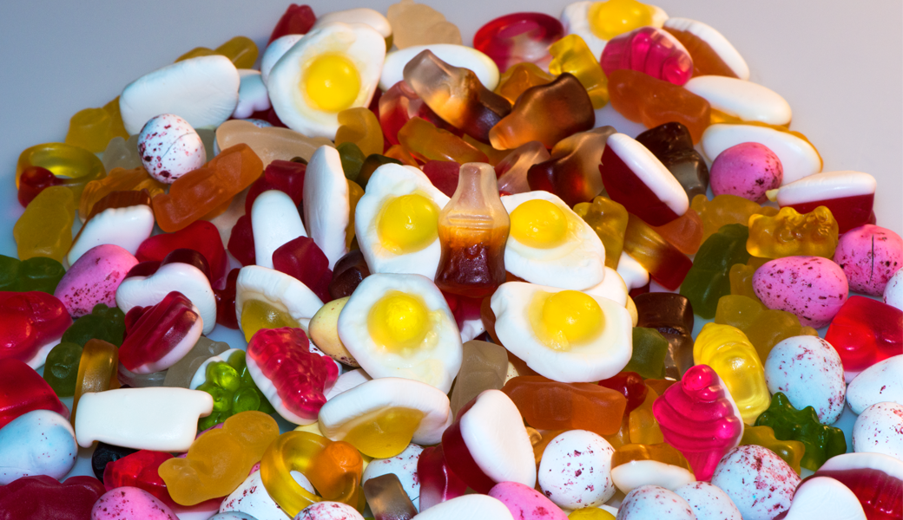
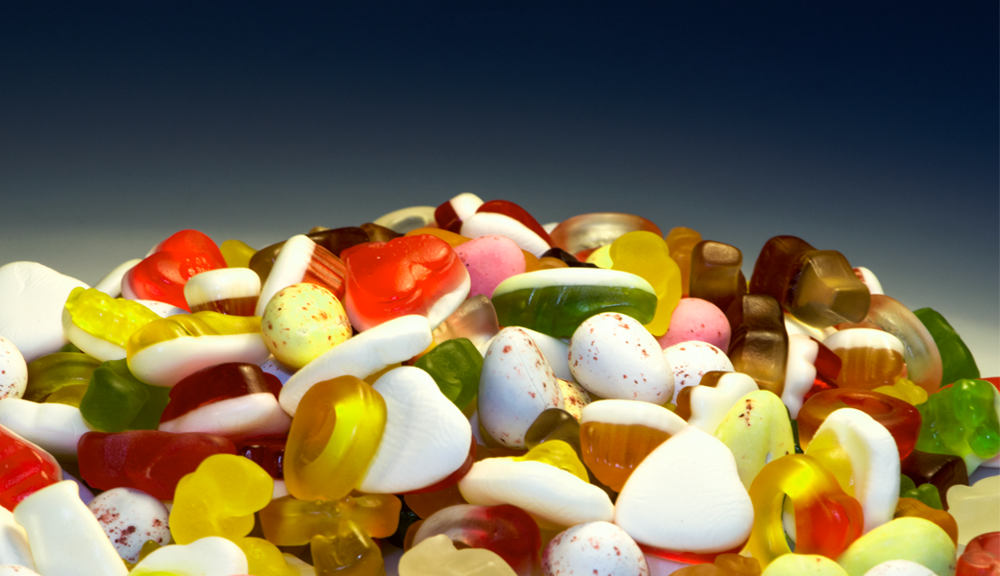
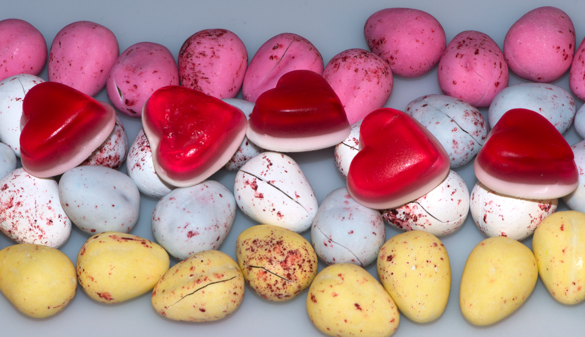
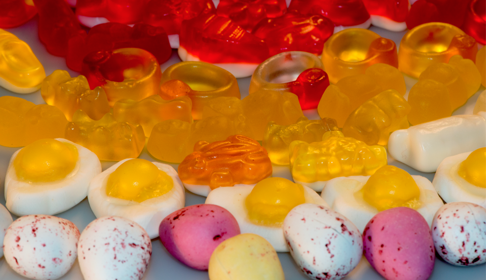
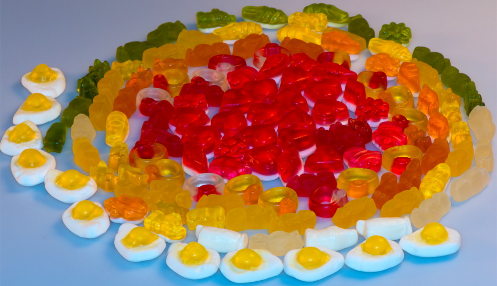
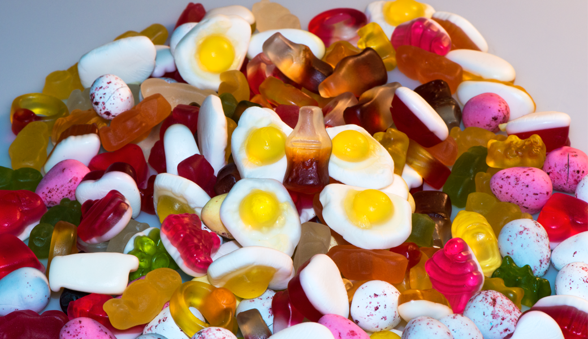
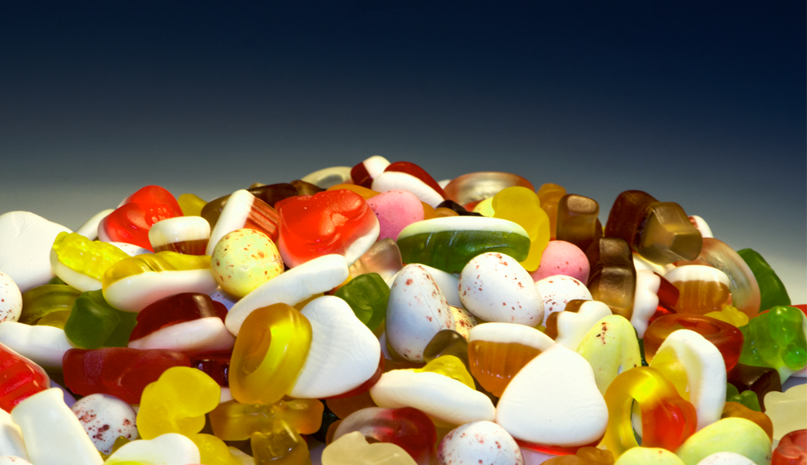
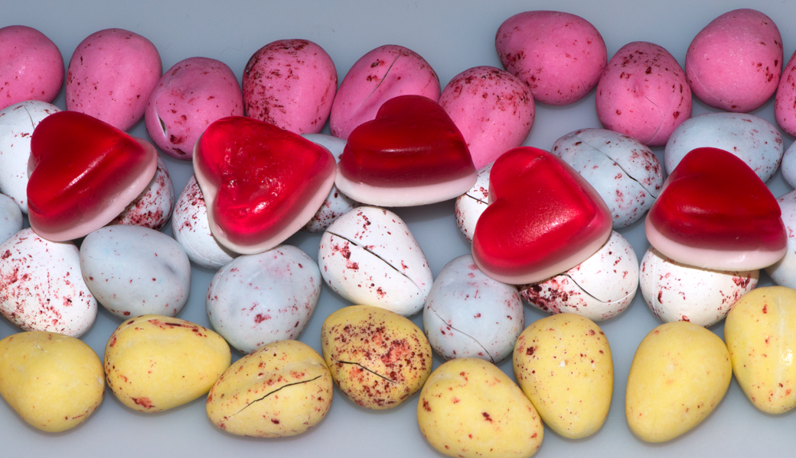
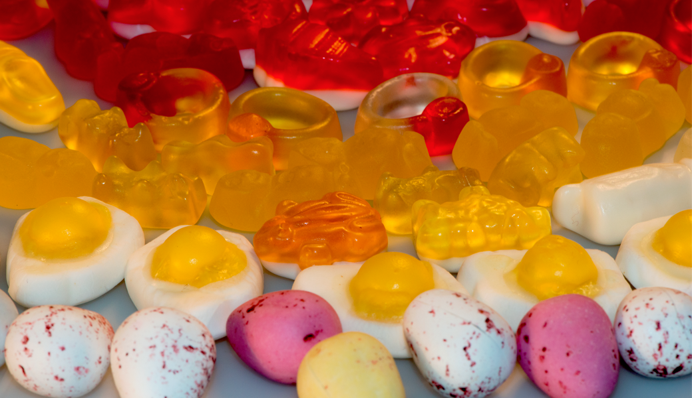
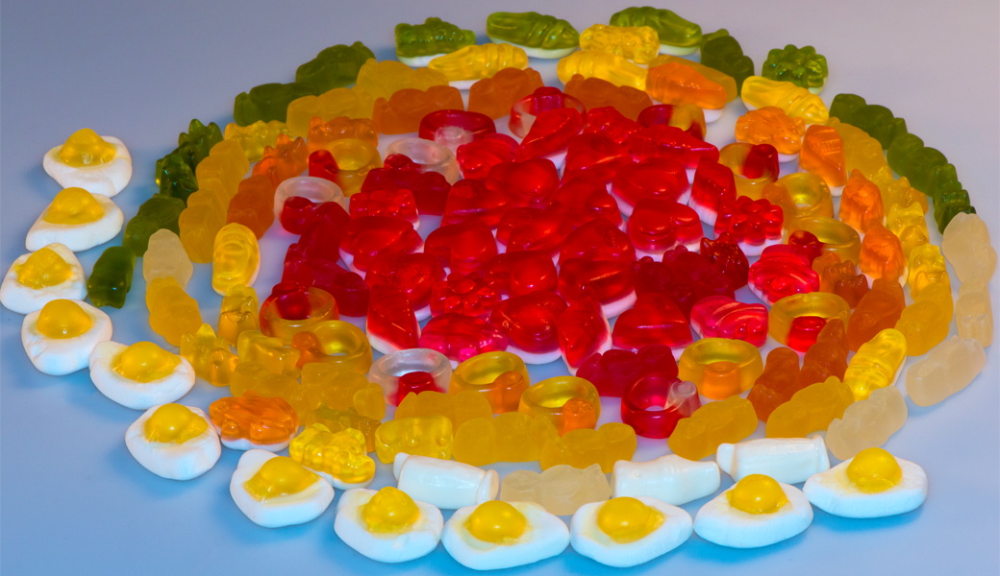

Macro Photography
Development
- Research
- Graphic design
- UX design
- UX user testing
Software
- Nikon
- Photohop
- Lightroom
Projcet's Phylosophy
ATM mobile app is a part of UX design course. The purpose of te course is to create a mobile app as a prototype for the ATM. This is a group project.
The goal of this app is to produce a functional app. There are new fuction are created. Based on the reaserch there is a decision to provide online travel card with the top-up option inside of the app. There are also several payment methods are added. Online ticket is created with the validation fucmtion where users can see how long they still can use the ticket.
Overall, the final product as matched with the intial idea.
The design od the app is based on the current color pallet with some improvemnets to make it more userfriendly. Everything is designed in simplicity but with full functionality to make users easy understand how to use the app.
 








